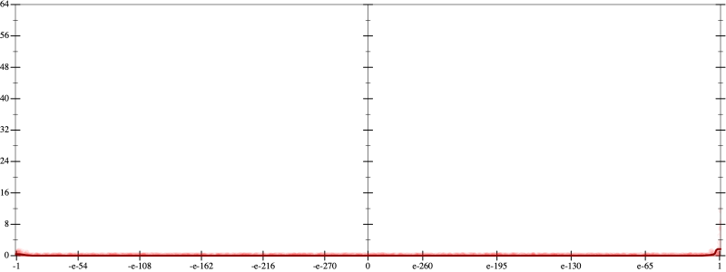
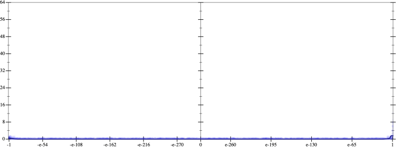
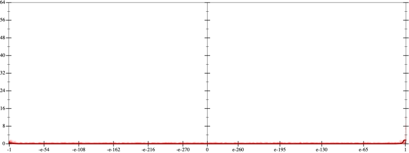
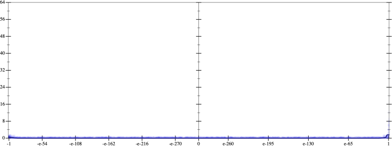

Initial program 0.0
\[\left(\left(\left(\left(\left(\left(1.0 + -7.0 \cdot x\right) + 10.5 \cdot \left(x \cdot x\right)\right) + -5.833333 \cdot \left(\left(x \cdot x\right) \cdot x\right)\right) + 1.458333 \cdot \left(\left(\left(x \cdot x\right) \cdot x\right) \cdot x\right)\right) + -0.175 \cdot \left(\left(\left(\left(x \cdot x\right) \cdot x\right) \cdot x\right) \cdot x\right)\right) + 0.009722 \cdot \left(\left(\left(\left(\left(x \cdot x\right) \cdot x\right) \cdot x\right) \cdot x\right) \cdot x\right)\right) + -0.000198 \cdot \left(\left(\left(\left(\left(\left(x \cdot x\right) \cdot x\right) \cdot x\right) \cdot x\right) \cdot x\right) \cdot x\right)\]
Applied simplify0.0
\[\leadsto \color{blue}{\left(\left(x \cdot x\right) \cdot \left(10.5 + -5.833333 \cdot x\right) + \left(x \cdot -7.0 + 1.0\right)\right) + \left(\left(\left(x \cdot x\right) \cdot \left(x \cdot x\right)\right) \cdot \left(1.458333 + -0.175 \cdot x\right) + \left({x}^{3} \cdot {x}^{3}\right) \cdot \left(-0.000198 \cdot x + 0.009722\right)\right)}\]
 
